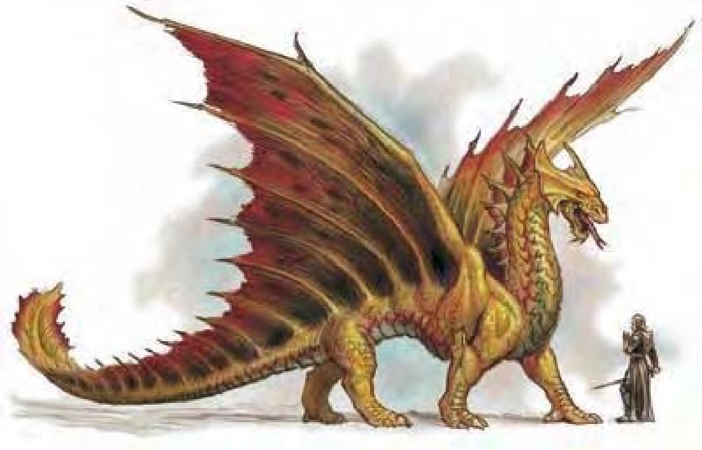

圆板状前额，下颚长剑角，脖子有皱边，翅膀像蝠��鱼。黄铜龙看起来像日烤干的沙子，鳞片闪耀着烈着黄铜色光芒。
黄铜龙很健谈，有时候可以提供有用的信息，但通常会东拉西扯一大段并暗示要给礼物之后才会分享出来。
他们刚出生时鳞片是带有斑点的暗棕色，随着年龄增长，鳞片会渐趋黄铜色，最后呈现一种暖和而光滑的色泽。头部巨大的碟状突起光滑而有金属光泽，下巴的剑角随着年龄变得更锋利。翅膀和皱边的边缘呈现带有斑点的绿色，随着年龄变暗。瞳孔也会随年龄慢慢变暗，最后眼睛就像是融化的金属球。
黄铜龙喜欢干燥炎热，大部分时间都在享受沙漠艳阳的日光浴。身上散发出一股强烈的金属或沙子气味。他们喜欢将巢穴建在高处的洞穴，最好是面向东边，这样就可以享受清晨的阳光。黄铜龙的地盘里还会有几个地点可让他享受日光浴，并在交谈时困住没有警觉性的旅行者。
如有必要，黄铜龙几乎可以吃下任何东西，但通常吃的很少。他们能够由在栖息地很罕见的清晨朝露取得养分，曾有人目击黄铜龙小心翼翼的用长舌头吸取植物上的露水。
由于黄铜龙和蓝龙的栖息地相同，蓝龙可说是他最大的敌人。蓝龙较大的体型在一对一的时候比较占便宜，所以黄铜龙通常会先避开蓝龙，直到可以对这邻居发动大规模攻击。
黄铜龙的环境与社群环境：热暖带沙漠。
组织：雏龙、幼龙、少年龙、青少年龙和青年龙：单独或数尾 (2-5)；成年龙、壮年龙、老年龙、极老龙、古龙、上古龙或太古龙：单独、成双或一家 (1-2，加上2-5个后代)。
挑战级数：雏龙3、幼龙4、少年龙6、青少年龙8、青年龙10、成年龙12、壮年龙15、老年龙17、极老龙19、古龙20、上古龙21、太古龙23。
宝藏：三倍标准。
阵营：总是混乱善良。
进化：雏龙5-6HD；幼龙8-9HD；少年龙11-12HD；青少年龙14-15HD；青年龙17-18HD；成年龙20-21HD；壮年龙23-24HD；老年龙26-27HD；极老龙29-30HD；古龙32-33HD；上古龙35-36HD；太古龙38+ HD。
等级修正值：雏龙+2；幼龙+3；少年龙+4；青少年龙+4；其余无。
| 资料栏位 | 黄铜雏龙 (Brass Wyrmling) 微型龙 (火系) |
| 生命骰 | 4d12+4 (30HP) |
| 先攻 | +4 |
| 速度 | 60英尺 (12格)、遁地30英尺、飞行150英尺 (普通) |
| 防御等级 | 15 (+2体型、+3天生)、接触12、措手不及15 |
| 基本攻击/擒抱 | +4 / -4 |
| 攻击 | 啮咬+6近战 (1d4) |
| 全力攻击 | 啮咬+6近战 (1d4) 及 2爪抓+1近战 (1d3) |
| 占据/触及 | 2.5英尺 / 2英尺 / 0英尺 (啮咬5英尺) |
| 特殊攻击 | 喷吐攻击、类法术能力 |
| 特殊能力 | 黑暗视觉120英尺、对火焰/“睡眠术”/麻痹免疫、昏暗视觉、易受寒冷伤害 |
| 豁免 | 强韧+5、反射+4、意志+4 |
| 属性 | 力量11、敏捷10、体质13、智力10、感知11、魅力10 |
| 技能与专长 | 躲藏+7、历史知识+6、地方知识+6、自然知识+5、聆听+6、搜索+6、侦察+6 专长：空袭、精通先攻 |
| 环境/阵营/CR | 热暖带沙漠 / 总是混乱善良 / 挑战级数：3 |
黄铜龙宁可动手而不动口，如果一个智慧生物没有和黄铜龙交谈就打算离开，黄铜龙可能在一气之下会使用“暗示”或“睡眠术”气体迫使对方屈服。被迫睡着的生物醒来之后，可能会发现被黄铜龙压制或脖子以下都被埋在沙子里，直到黄铜龙的话瘾满足后才得以脱困。面临危险时，年轻的黄铜龙会飞离敌人视野，躲在沙子里。年长的黄铜龙不屑使用这种手段，会设法在战斗时取得优势。
喷吐攻击 (超自然)：黄铜龙有两种喷吐攻击，射出直线状火焰或是锥状“睡眠术”气体。在锥状范围内的生物必须进行意志检定，不论HD，失败就会睡着1d6轮，每一年龄层再加一轮。
以雏龙为例：30英尺直线，1d6点火焰伤害，通过反射检定 (DC=13) 则伤害减半；或15英尺锥状，“睡眠术”1d6+1轮，通过意志检定 (DC=13) 则无效。
类法术能力：随意施展――“动物交谈”；每天3次――“忍受元素伤害” (青少年龙或更老的龙，半径10英尺x年龄层)；每天1次――“暗示” (成年龙或更老的龙)；“操控风相” (老年龙或更老的龙)；“操控天气” (古龙或更老的龙)。
“召唤风巨灵” (超自然)：太古龙可以使用此能力，效果如同“召唤怪物术”，但只能召唤一个风巨灵。此能力等同七级法术。
技能：“唬骗”、“搜集信息”和“生存”为黄铜龙的本职技能。
| 年龄层 | 体型 | 生命骰 (HP) | 力 | 敏 | 体 | 智 | 感 | 魅 | 基本攻击/擒抱 | 基本攻击 | 强韧 | 反射 | 意志 | 喷吐攻击 (DC) | 威势DC |
|---|---|---|---|---|---|---|---|---|---|---|---|---|---|---|---|
| 雏龙 | 微 | 6d12+6 (45) | 13 | 10 | 13 | 14 | 15 | 14 | +6 / -3 | +8 | +6 | +5 | +7 | 2d6 (14) | ― |
| 幼龙 | 小 | 9d12+18 (76) | 15 | 10 | 15 | 14 | 15 | 14 | +9 / +11 | +11 | +8 | +6 | +8 | 4d6 (16) | ― |
| 少年龙 | 中 | 12d12+24 (102) | 17 | 10 | 15 | 16 | 17 | 16 | +12 / +15 | +15 | +10 | +8 | +11 | 6d6 (18) | ― |
| 青少年龙 | 中 | 15d12+45 (142) | 19 | 10 | 17 | 18 | 19 | 18 | +15 / +23 | +18 | +12 | +9 | +13 | 8d6 (20) | ― |
| 青年龙 | 大 | 18d12+72 (189) | 23 | 10 | 19 | 18 | 19 | 18 | +18 / +28 | +23 | +15 | +11 | +15 | 10d6 (23) | 23 |
| 成年龙 | 大 | 21d12+105 (241) | 27 | 10 | 21 | 20 | 21 | 20 | +21 / +37 | +27 | +17 | +12 | +17 | 12d6 (25) | 25 |
| 壮年龙 | 超大 | 24d12+120 (276) | 29 | 10 | 21 | 20 | 21 | 20 | +24 / +41 | +31 | +19 | +14 | +19 | 14d6 (27) | 27 |
| 老年龙 | 超大 | 27d12+162 (337) | 31 | 10 | 23 | 22 | 23 | 22 | +27 / +45 | +35 | +21 | +15 | +21 | 16d6 (29) | 29 |
| 极老龙 | 超大 | 30d12+180 (375) | 33 | 10 | 23 | 22 | 23 | 22 | +30 / +49 | +39 | +23 | +17 | +23 | 18d6 (31) | 31 |
| 古龙 | 超巨 | 33d12+231 (445) | 35 | 10 | 25 | 24 | 25 | 24 | +33 / +57 | +41 | +25 | +18 | +25 | 20d6 (33) | 33 |
| 上古龙 | 巨 | 36d12+288 (522) | 37 | 10 | 27 | 26 | 27 | 26 | +36 / +61 | +45 | +28 | +20 | +28 | 22d6 (36) | 36 |
| 太古龙 | 巨 | 39d12+312 (565) | 39 | 10 | 27 | 26 | 27 | 26 | +39 / +65 | +49 | +29 | +21 | +29 | 22d6 (37) | 37 |
| 年龄层 | 速度 | 先攻权 | 防御等级 | 特殊能力 | 施法者等级 | SR |
|---|---|---|---|---|---|---|
| 雏龙 | 60英尺、遁地30英尺、飞行150英尺 (普通) | +0 | 15 (+2体型、+3天生)、接触12、措手不及15 | 对火焰免疫、“动物交谈”、易受寒冷伤害 | ― | ― |
| 幼龙 | 60英尺、遁地30英尺、飞行150英尺 (普通) | +0 | 17 (+1体型、+6天生)、接触11、措手不及17 | 对火焰免疫、“动物交谈”、易受寒冷伤害 | ― | ― |
| 少年龙 | 60英尺、遁地30英尺、飞行200英尺 (不良) | +0 | 19 (+9天生)、接触10、措手不及19 | 对火焰免疫、“动物交谈”、易受寒冷伤害 | 1级 | ― |
| 青少年龙 | 60英尺、遁地30英尺、飞行200英尺 (不良) | +0 | 22 (+12天生)、接触10、措手不及22 | “忍受元素伤害” | 3级 | ― |
| 青年龙 | 60英尺、遁地30英尺、飞行200英尺 (不良) | +0 | 24 (-1体型、+15天生)、接触9、措手不及24 | 伤害减免5 / 魔法 | 5级 | 18 |
| 成年龙 | 60英尺、遁地30英尺、飞行200英尺 (不良) | +0 | 27 (-1体型、+18天生)、接触9、措手不及27 | “暗示” | 7级 | 20 |
| 壮年龙 | 60英尺、遁地30英尺、飞行200英尺 (不良) | +0 | 29 (-2体型、+21天生)、接触8、措手不及29 | 伤害减免10 / 魔法 | 9级 | 22 |
| 老年龙 | 60英尺、遁地30英尺、飞行200英尺 (不良) | +0 | 32 (-2体型、+24天生)、接触8、措手不及32 | “操控风相” | 11级 | 24 |
| 极老龙 | 60英尺、遁地30英尺、飞行200英尺 (不良) | +0 | 35 (-2体型、+27天生)、接触8、措手不及35 | 伤害减免15 / 魔法 | 13级 | 25 |
| 古龙 | 60英尺、遁地30英尺、飞行200英尺 (不良) | +0 | 38 (-2体型、+30天生)、接触8、措手不及38 | “操控天气” | 15级 | 27 |
| 上古龙 | 60英尺、遁地30英尺、飞行250英尺 (笨拙) | +0 | 39 (-4体型、+33天生)、接触6、措手不及39 | 伤害减免20 / 魔法 | 17级 | 28 |
| 太古龙 | 60英尺、遁地30英尺、飞行250英尺 (笨拙) | +0 | 42 (-4体型、+36天生)、接触6、措手不及42 | “召唤风巨灵” | 19级 | 27 |